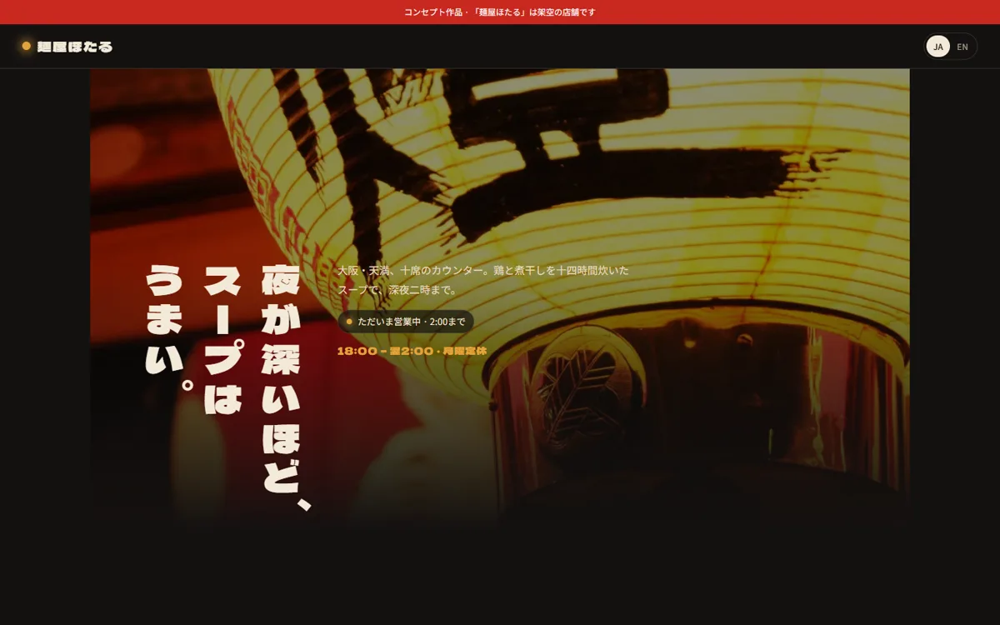
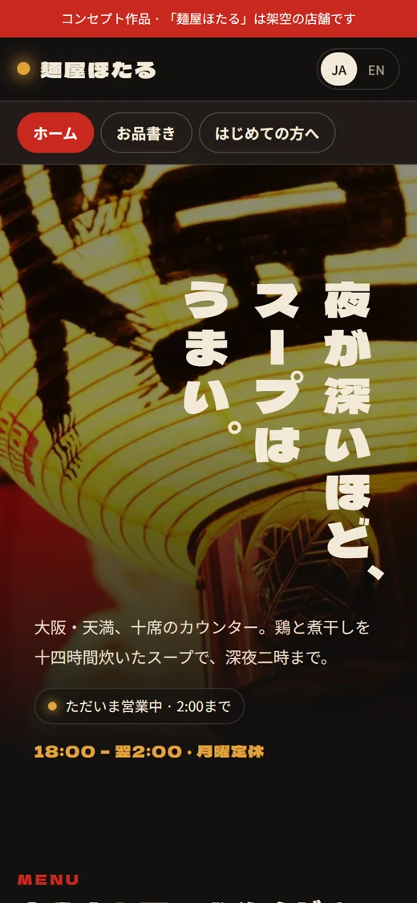

サービス 04
新メニュー、季節の写真、臨時休業。お店は毎月変わります。サーバー、バックアップ、更新、ちょっとした修正をまとめてお任せください。
現地の通貨での目安です。正式なお見積りは、無料相談のあとに書面でお出しします。
はい。まず中身を確認し、お手入れできるかお伝えします。
新しいページの追加など大きな変更は、事前にお見積りします。
ドメインとすべてのファイルをお渡しします。
コンセプト · 美容・ウェルネス · リーズ
入る前に待ち時間が分かる理容室のサイト


コンセプト · 飲食 · 大阪
来店前に注文を決められる、ラーメン屋のサイト
コンセプト · 飲食 · ロンドン
いま棚に何が残っているかが分かる、パン屋のサイト
質問は三つだけ。初回のご相談は無料で、お申し込みの義務はありません。
hmohammadjavad48@gmail.com
当てはまるものをすべて選んでください。
コピーして hmohammadjavad48@gmail.com に送ってください。担当のパートナーが1営業日以内にお返事します。